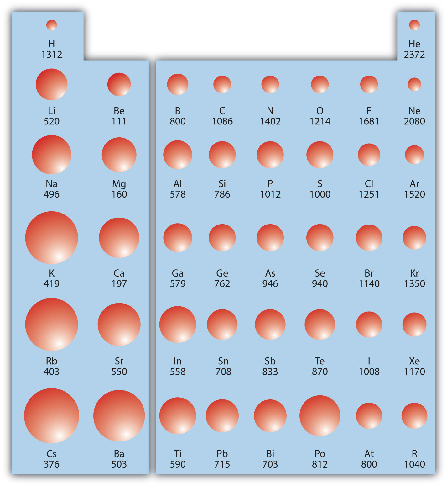
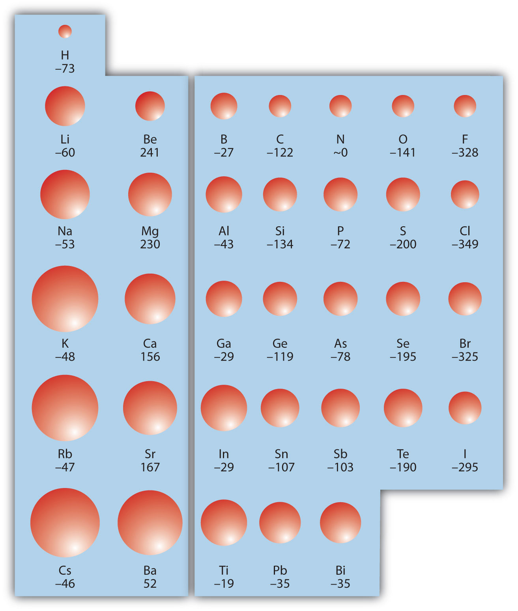

One of the reasons the periodic table is so useful is because its structure allows us to qualitatively determine how some properties of the elements vary versus their position on the periodic table. The variation of properties versus position on the periodic table is called periodic trendsVariation of properties versus position on the periodic table.. There is no other tool in science that allows us to judge relative properties of a class of objects like this, which makes the periodic table a very useful tool. Many periodic trends are general. There may be a few points where an opposite trend is seen, but there is an overall trend when considered across a whole row or down a whole column of the periodic table.
The first periodic trend we will consider atomic radius. The atomic radiusAn indication of the size of the atom. is an indication of the size of an atom. Although the concept of a definite radius of an atom is a bit fuzzy, atoms behave as if they have a certain radius. Such radii can be estimated from various experimental techniques, such as the x-ray crystallography of crystals.
As you go down a column of the periodic table, the atomic radii increase. This is because the valence electron shell is getting a larger and there is a larger principal quantum number, so the valence shell lies physically farther away from the nucleus. This trend can be summarized as follows:
where PT stands for periodic table. Going across a row on the periodic table, left to right, the trend is different. This is because although the valence shell maintains the same principal quantum number, the number of protons—and hence the nuclear charge—is increasing as you go across the row. The increasing positive charge casts a tighter grip on the valence electrons, so as you go across the periodic table, the atomic radii decrease. Again, we can summarize this trend as follows:
Figure 8.19 "Atomic Radii Trends on the Periodic Table" shows spheres representing the atoms of the s and p blocks from the periodic table to scale, showing the two trends for the atomic radius.
Figure 8.19 Atomic Radii Trends on the Periodic Table
Although there are some reversals in the trend (e.g., see Po in the bottom row), atoms generally get smaller as you go across the periodic table and larger as you go down any one column. Numbers are the radii in pm.
Referring only to a periodic table and not to Figure 8.19 "Atomic Radii Trends on the Periodic Table", which atom is larger in each pair?
Solution
Test Yourself
Referring only to a periodic table and not to Figure 8.19 "Atomic Radii Trends on the Periodic Table", which atom is smaller, Ca or Br?
Answer
Br
Ionization energy (IE)The amount of energy required to remove an electron from an atom in the gas phase. is the amount of energy required to remove an electron from an atom in the gas phase:
IE is usually expressed in kJ/mol of atoms. It is always positive because the removal of an electron always requires that energy be put in (i.e., it is endothermic). IE also shows periodic trends. As you go down the periodic table, it becomes easier to remove an electron from an atom (i.e., IE decreases) because the valence electron is farther away from the nucleus. Thus,
However, as you go across the periodic table and the electrons get drawn closer in, it takes more energy to remove an electron; as a result, IE increases:
Figure 8.20 "Ionization Energy on the Periodic Table" shows values of IE versus position on the periodic table. Again, the trend isn’t absolute, but the general trends going across and down the periodic table should be obvious.
Figure 8.20 Ionization Energy on the Periodic Table
Values are in kJ/mol.
IE also shows an interesting trend within a given atom. This is because more than one IE can be defined by removing successive electrons (if the atom has them to begin with):
A(g) → A+(g) + e− IE1 A+(g) → A2+(g) + e− IE2 A2+(g) → A3+(g) + e− IE3and so forth.
Each successive IE is larger than the previous because an electron is being removed from an atom with a progressively larger positive charge. However, IE takes a large jump when a successive ionization goes down into a new shell. For example, the following are the first three IEs for Mg, whose electron configuration is 1s22s22p63s2:
Mg(g) → Mg+(g) + e− IE1 = 738 kJ/mol Mg+(g) → Mg2+(g) + e− IE2 = 1,450 kJ/mol Mg2+(g) → Mg3+(g) + e− IE3 = 7,734 kJ/molThe second IE is twice the first, which is not a surprise: the first IE involves removing an electron from a neutral atom, while the second one involves removing an electron from a positive ion. The third IE, however, is over five times the previous one. Why is it so much larger? Because the first two electrons are removed from the 3s subshell, but the third electron has to be removed from the n = 2 shell (specifically, the 2p subshell, which is lower in energy than the n = 3 shell). Thus, it takes much more energy than just overcoming a larger ionic charge would suggest. It is trends like this that demonstrate that electrons are organized in atoms in groups.
Which atom in each pair has the larger IE?
Solution
Test Yourself
Which atom has the lower ionization energy, C or F?
Answer
C
The opposite of IE is described by electron affinity (EA)The energy change when a gas-phase atom accepts an electron., which is the energy change when a gas-phase atom accepts an electron:
EA is also usually expressed in kJ/mol. EA also demonstrates some periodic trends, although they are less obvious than the other periodic trends discussed previously. Generally, as you go across the periodic table, EA increases its magnitude:
There is not a definitive trend as you go down the periodic table; sometimes EA increases, sometimes it decreases. Figure 8.21 "Electron Affinity on the Periodic Table" shows EA values versus position on the periodic table for the s- and p-block elements. The trend isn’t absolute, especially considering the large positive EA values for the second column. However, the general trend going across the periodic table should be obvious.
Figure 8.21 Electron Affinity on the Periodic Table
Values are in kJ/mol.
Predict which atom in each pair will have the highest magnitude of EA.
Solution
Test Yourself
Predict which atom will have the highest magnitude of EA, As or Br.
Answer
Br
Write a chemical equation with an IE energy change.
Write a chemical equation with an EA energy change.
State the trends in atomic radii as you go across and down the periodic table.
State the trends in IE as you go across and down the periodic table.
Which atom of each pair is larger?
Which atom of each pair is larger?
Which atom of each pair is larger?
Which atom of each pair is larger?
Which atom has the higher IE?
Which atom has the higher IE?
Which atom has the higher IE?
Which atom has the higher IE?
A third-row element has the following successive IEs: 738; 1,450; 7,734; and 10,550 kJ/mol. Identify the element.
A third-row element has the following successive IEs: 1,012; 1,903; 2,912; 4,940; 6,270; and 21,300 kJ/mol. Identify the element.
For which successive IE is there a large jump in IE for Ca?
For which successive IE is there a large jump in IE for Al?
Which atom has the greater magnitude of EA?
Which atom has the greater magnitude of EA?
Na(g) → Na+(g) + e− ΔH = IE (answers will vary)
As you go across, atomic radii decrease; as you go down, atomic radii increase.
Mg
The third IE shows a large jump in Ca.